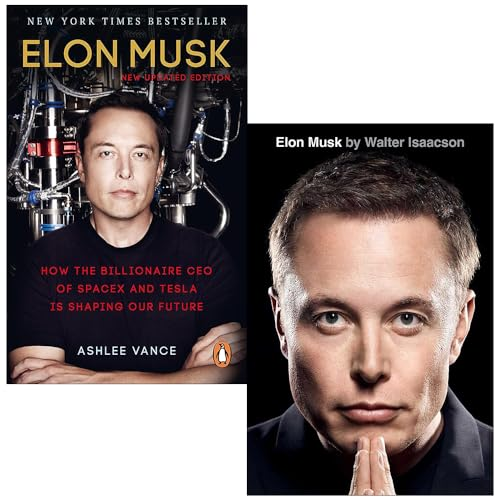

Library › Business & Startups
Elon Musk — Summary & Key Lessons

Tesla, SpaceX, and the quest for a fantastic future — the definitive account of tech's most audacious founder.
📖 OPEN THE FULL INTERACTIVE BREAKDOWN →🌐 Read it in Hindi, Hinglish, Gujarati, Tamil & 22 more languages — free, with audio.
💡 The Big Idea
Vance's biography — built on rare access to Musk, family, and hundreds of colleagues — traces the arc from a bullied, book-devouring South African childhood to the only man running two companies revolutionizing separate trillion-dollar industries. The through-lines for builders: FIRST-PRINCIPLES THINKING (reason from physics and raw costs, not analogy — rockets 'should' cost the sum of their materials, not what Lockheed charges); mission as recruiting weapon (multi-planetary life and sustainable energy attract talent money can't buy); betting the fortune (Musk put his last dollars in when both companies were dying in 2008); pathological urgency (deadlines set at physics' edge, not comfort's); and the costs — burned-out lieutenants, broken marriages, a management style that consumes people. It's a manual and a warning, printed on the same pages.
🧠 The 6 Key Lessons
Lesson 1: First Principles: Reason From Physics, Not Analogy
The SpaceX Founding Chapters
Musk's signature cognitive move: strip a problem to its physical fundamentals and rebuild the solution from there, ignoring 'how it's done.' The founding demonstration: told rockets cost $65M+, he priced the raw materials — aluminum, titanium, copper, carbon fiber — at roughly 2% of the sticker price, concluded the industry was selling markup and legacy process, and started SpaceX to build from first principles (eventually cutting launch costs by an order of magnitude). The method generalizes: batteries 'cost $600/kWh' — but the constituent metals cost a fraction; therefore the price was a process problem, not a physics problem, and Tesla attacked the process. The discipline for mortals: when anyone (including you) says 'that's just what it costs' or 'that's how it's done,' decompose to fundamentals and re-derive — most impossibilities are conventions wearing lab coats.
📖 Example: The Russia trip is the origin legend: Musk flew to Moscow to buy refurbished ICBMs for a Mars mission, was quoted absurd prices (and spat toward, by one account), and on the flight home opened a spreadsheet — pricing every rocket component from first… Read the full example →
⚡ Do this: Take your industry's biggest 'fixed' cost or constraint and decompose it: list the true fundamentals (materials, time, physics, regulation) versus the convention (process, markup, habit). Where the gap is largest, that's your SpaceX-shaped opportunity — or at least your next negotiation.
Lesson 2: The Mission Is the Moat
Tesla & SpaceX Culture Chapters
Both companies ran on missions so audacious they functioned as infrastructure: make humanity multi-planetary; accelerate the world's transition to sustainable energy. Vance documents the practical returns: recruiting (top engineers left cushy aerospace and Apple jobs for lower pay and brutal hours — because Mars beats maintenance), retention through misery (people endure 90-hour weeks for meaning they'd never give a widget-maker), free evangelism (Tesla spent ~zero on advertising while owners behaved like missionaries), and decision clarity (every trade-off tested against the mission, not the quarter). The mechanism isn't slogans — it's CREDIBILITY: Musk visibly bet his entire fortune and worked the factory floor, so the mission read as real. The transferable law: a genuine mission, credibly held, is the only compensation that scales without cash — and the only moat competitors can't copy by hiring your people, because the people won't leave the mission.
📖 Example: Vance's interviews repeat one pattern: SpaceX engineers describing sleeping under desks BY CHOICE, framing weekends lost as 'getting humanity to Mars faster' — while aerospace incumbents couldn't hire equivalent talent at higher salaries. The Tesla mirror:… Read the full example →
⚡ Do this: Write your venture's mission at the scale that would make talent take a pay cut — then test its credibility: what have YOU visibly bet on it? If the answer is nothing, the mission is decoration; stake something real and public this quarter.
Lesson 3: 2008: Betting the Last Dollar
The Darkest Year
The biography's crucible: in 2008, SpaceX had failed three consecutive launches (the third carrying customer payloads and NASA's hopes), Tesla was hemorrhaging cash amid the financial crisis, Musk was mid-divorce, and the PayPal fortune (~$180M) was nearly gone — poured into both companies plus SolarCity. The moment of decision: with money for perhaps one company's survival, Musk split his remaining funds between both, borrowed for rent, and pushed a fourth launch within weeks. The fourth launch succeeded (September 2008); NASA's $1.6B contract arrived that December 22; the Tesla financing round closed on Christmas Eve, hours from payroll failure. Vance's lesson isn't 'always bet everything' — it's the anatomy of conviction under fire: Musk's stress-response (narrowed focus, escalated work, zero public doubt) and his refusal to hedge between his children ('I couldn't choose one') held two dying companies alive by force of allocation and nerve until physics and paperwork caught up.
📖 Example: The details Vance assembles make the myth material: Musk borrowing money from friends for living expenses while worth 'hundreds of millions' on paper; waking from nightmares, screaming from stress; Kimbal watching his brother refuse — repeatedly — advisors'… Read the full example →
⚡ Do this: Pre-write your own crucible protocol NOW, in peacetime: at what threshold do you double down versus fold, what would you never split (and what would you), and who are the three people you'd call. Crisis decisions made in advance are decisions; made in the fire, they're reflexes — train the reflex.
Lesson 4: The Musk Operating System: Urgency, Standards, and Their Price
Management Chapters Throughout
Vance documents the management OS with both admiration and receipts. The components: IMPOSSIBLE DEADLINES as physics-forcing functions (Musk timelines are notoriously 'wrong' yet consistently compress achievement — teams hitting 'late' at speeds no competitor approaches); DIRECT ACCESS AND FLAT INFORMATION (any engineer could email him; he answered at 2 a.m.; information hoarding was a firing offense); EXTREME OWNERSHIP TESTS (asked a question outside your area? 'I don't know' was acceptable once — unexamined ignorance twice was not); and PERSONAL TECHNICAL DEPTH (he could argue valve metallurgy with the propulsion team — leaders who can't be fooled can't be slow-rolled). The price, printed honestly: burned-out lieutenants, public firings, the 'Musk gauntlet' of loyalty tests, and Vance's running question of whether the cruelty was the cost of the output or a tax the output paid anyway. The synthesis for readers: adopt the urgency, the technical depth, and the information flatness; treat the human costs as documented failure modes, not features.
📖 Example: The Mary Beth Brown story is the cautionary centerpiece: Musk's devoted executive assistant of over a decade asked for compensation matching her expanded role; Musk suggested she take two weeks off while he absorbed her duties — then concluded the role was… Read the full example →
⚡ Do this: Steal three components this month: set one deadline at the edge of physics rather than comfort (announce it); flatten one information chokepoint (skip-level access, open metrics); and deepen your technical floor in your product's core domain until you can't be fooled. Separately, write the guardrail: the human cost you refuse to pay, in writing, before success makes it negotiable.
Lesson 5: The Musk Algorithm: Delete, Simplify, Accelerate, Automate
Part 4: The Operating System
Musk runs his companies on a five-step algorithm that attacks complexity at the root. First: question every requirement — especially ones that come from 'smart people', because requirements are often wrong. Second: delete any part or process you can, because the best part is the part you don't have to build. Third: simplify after deleting, not before — optimizing something that shouldn't exist is waste. Fourth: accelerate cycle times, but only after steps 1–3. Fifth: automate — last, never first, because automating a deleted process is the ultimate waste. The algorithm is first principles applied to engineering culture itself.
📖 Example: When Tesla's factory line was too slow, Musk didn't automate first — he made teams delete every unnecessary step until the remaining line was short and simple, and only then added robots. Companies that automate a bloated process just produce bloat faster. Read the full example →
⚡ Do this: Take your most complex process (work, study, routine). List every step, question each requirement, delete everything not essential, then simplify what remains — before adding any new tool or automation.
Lesson 6: The Maniacal Focus: Sweat the Details Others Skip
Part 2: The Builder's Ethic
Vance's biography shows Musk personally sleeping at the factory, testing rocket valves at 2am, and rewriting engineering plans himself. His edge is not genius alone — it is an almost painful willingness to enter the details that executives normally delegate away. This 'maniacal sense of urgency' compresses years of work into months, because when the leader knows the details, decisions happen in hours instead of weeks. The lesson for everyone: your willingness to do the unglamorous detail work is a competitive weapon. Details are where competitors lose interest and where you win.
📖 Example: When SpaceX's first rockets failed, Musk didn't hire a committee — he personally went through the failure data with engineers until the cause was found, then rebuilt. His competitors had the same engineers; they lacked the leader who would sleep on the… Read the full example →
⚡ Do this: Pick one detail in your work that everyone avoids. Own it personally this week — the boring, crucial part — and watch how much faster the whole thing moves.
✅ 5-Step Action Plan
- Decompose your industry's biggest 'fixed' cost to first principles.
- Stake something visible on your mission; let honesty filter believers.
- Write the crucible protocol in peacetime.
- Adopt urgency, flat information, and technical depth — with a written guardrail.
- Set one physics-edge deadline and announce it this month.
⚠️ When This Doesn't Work
Vance's Elon is a blueprint that reads like destiny — but the same 'bet everything on the future' playbook that built Tesla also produced the metaverse bet that burned $50 billion for a rival who copied the style. Betting on futures you can't invoice is not vision, it's faith, and faith is not repeatable on command. Musk's own story shows the pattern: each big bet worked only when a real, paying product existed underneath the vision. Copy the product discipline, not the prophecy.
💀 The Graveyard Proves It
🥽 The Metaverse Bet — $46B for a World Nobody Moved Into. Burn: $46B+ burned; stock -76% at trough. Read the full case study →
💬 Best Quotes from Elon Musk
- “I would rather bet on the physics than the analysts.”
- “Failure is an option here. If things are not failing, you are not innovating enough.”
- “When something is important enough, you do it even if the odds are not in your favor.”
Interactive version: mark lessons as read, listen in your language, share quote cards.